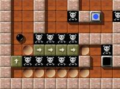

מדריך משחקי מחשב
|
מדריך Enigma הוכן ע"י ניר משגב, יולי 2003
מדריך Jump n bump הוכן ע"י גיא שקד,אוגוסט 2003 שאר המדריכים הוכנו ע"י דוביקס, אוגוסט-דצמבר 2003 כל הזכויות למדריך שמורות לפרוייקט גנו/לינוקס כנרת הרשות נתונה בזאת להעתיק, להפיץ ו/או לשנות את המסמך הזה, תחת תנאי רשיון ה GNU לשימוש חופשי במסמכים, גרסה 1.2 או כל גרסה מאוחרת יותר שתפורסם ע"י קרן התוכנה החופשית. |
1. ארנבים קופצים (Jump n bump)
ארנבים קופצים הוא משחק רב משתתפים (2-4) בו כל שחקן מגלם ארנבון חמוד הצובר נקודות ע"י קפיצה מעל ראשיהם של ארנבים אחרים, ובה בעת מנסה למנוע מארנבים אחרים לקפוץ מעליו.
מהלך המשחק
על-מנת להתחיל במשחק יש לגרום לכל הארנבים שישחקו לקפוץ מעבר לגזע העץ (אל צידו הימני) ואז לגרום לאחד מהם "לצאת" דרך צידו הימני של המסך. מרגע זה יתחיל המשחק ועבור כל קפיצה מעל ראשו של ארנב יריב יזכה השחקן בנקודה אחת.
הפסקת המשחק
על-מנת להפסיק את המשחק יש ללחוץ על Esc, שיוביל לטבלה שתסכם את המשחק הנוכחי. לחיצה שניה על Esc תוביל חזרה למסך הראשי של המשחק. כדי לצאת מהמשחק יש ללחוץ Esc במסך הראשי.
מקשי הפעלה
כל ארנב יכול לנוע שמאלה, ימינה או לקפוץ, והשליטה בתנועה מתבצעת על-ידי המקשים הבאים -
מקשי ההפעלה של הארנב הראשון ג'יפי (Jiffy) - הארנב הכתום
מקשי ההפעלה של הארנב השני פיז (Fizz) - הארנב האפור
מקשי ההפעלה של הארנב השלישי דוט (Dott) - הארנב הלבן
מקשי ההפעלה של הארנב הרביעי מיז'י (Mijji) - הארנב החום
תמונות מסך
2. אניגמה (Enigma)
באניגמה ("תעלומה"), המשימה היא לגלות צמדים של אבני-צבע מאותו סוג. זה אמנם נשמע פשוט, אך המשימה נעשית קשה מכיוון שהאבנים נוטות להיות מוסתרות, לא נגישות או מוגנות ע"י מכשולים לא צפויים.
התגברות על מכשולים אלה דורשת בדרך כלל מיומנות וחשיבה (ויכולה להיות די ממכרת).
תחילת המשחק
לחצו על הכפתור : Start Play, בחרו שלב, והתחילו לשחק.
בגרסה הנוכחית (0.81) קיימים חמישה סטים של שלבים :
סט ברירת המחדל הוא Enigma. על מנת לבחור סט אחר, לחצו על הכפתור: Level Pack, ובחרו את הסט הרצוי.
שימו לב : אין צורך לסיים שלב כדי להמשיך לשלב הבא, אולם השלבים מסודרים ברמת קושי עולה כך שכדאי להתחיל מהשלב הראשון ולהתקדם לפי הסדר.
כמו-כן ניתן לבחור רמת קושי ע"י לחיצה על מקש : Difficulty.
מהלך המשחק
אתם שולטים בכדור ע"י הזזת העכבר. עליכם "להדליק" את אבני-הצבע ע"י פגיעה בשתי אבני-צבע מאותו סוג, מבלי לפגוע באף אבן-צבע אחרת בדרך, ומבלי להתקל בלייזרים, בורות או חפצים מזיקים אחרים.
המשחק מבוסס ברובו על ניסוי ותעיה, בכל שלב תגלו הפתעות חדשות, פשוט תתחילו לשחק וכבר תבינו לבד...
מקשי הפעלה
תמונות מסך
|  |
3. שבירת לבנים (LBreakout2)
משחק קלסי שבו המשתמש אמור להכות במחבט, ולפגוע בלבנים על מנת להפילן מבלי לאבד את הכדור.
מהלך המשחק
על-מנת להתחיל במשחק יש לבחור בתפריט הראשי באפשרות Local Game ולאחר מכן לבחור באפשרות Start Game. הניווט בתפריטים מתבצע על-ידי החיצים או העכבר. בחירת אפשרויות שונות מתבצעת על-ידי לחיצה על הלחצן הימני של העכבר או מקש Enter.
כל סיבוב מתחיל ממצב נייח שבו מוצג השלב ועל המחבט מונח כדור. לתחילת הסיבוב יש להטיל את הכדור לימין או לשמאל. הכדור יפגע בלבנים או בקירות ויחזור למטה. יש להניע את המחבט כך שהכדור יפגע בו ולא ברצפה. פגיעה ברצפה תגרום לסיום הסיבוב ולאובדן מחבט אחד (המחבטים העומדים לרשותך מופיעים בצד השמאלי התחתון של המסך).
מטרת כל שלב היא להשמיד את כל הלבנים. קיימים סוגים שונים של לבנים. יש לבנים מתפוצצות שיגרמו להשמדת לבנים נוספות, לבנים שיש לפגוע בהן מספר פעמים כדי להשמידן ועוד. כל סוג מזוהה על ידי צבע ומרקם שונה.
לבנים שמושמדות גורמות לנפילת "הפתעות". ישנן הפתעות טובות, כגון בונוס נקודות, הגדלת המחבט או הוספת כדור נוסף למשחק. יש גם הפתעות רעות שכדאי להיזהר מהן, כגון החשכת המסך למספר שניות.
הפסקת המשחק
על-מנת להפסיק את המשחק יש ללחוץ על Esc. כאשר תופיע השאלה אם לצאת יש לענות ב Y על מנת לחזור לתפריט משחק חדש, ממנו ניתן לחזור לתפריט הראשי ע"י לחיצה חוזרת על Esc. יציאה מהמשחק מתבצעת מהתפריט הראשי ע"י לחיצה על Esc או בחירה באפשרות Exit בתפריט.
מקשי הפעלה
להלן המקשים העיקריים במשחק. מי שמתקשה עם ארבעה כפתורים יכול לבחור באחד ממקשי ההטלה בלבד. מקשים נוספים לשימוש מתקדם ניתן לראות באפשרות Controls מהתפריט הראשי (וכן לשנות את מקשי ברירת המחדל).
אפשרויות נוספות
התפריט הראשי מאפשר לקבוע את מספר השחקנים במחשב מקומי (בין 1 עד 4) או להגדיר משחק רשת, לקבוע את רמת הקושי של המשחק, לקבוע את מאפייני הצליל והתמונה, לשנות את מקשי המשחק ואפילו ליצור רמות משחק חדשות. הניווט בתפריטים מתבצע על-ידי החיצים או העכבר. בחירת אפשרויות שונות מתבצעת על-ידי לחיצה על הלחצן הימני של העכבר או מקש Enter. ניתן להציג עזרה על כל אפשרות בתפריט (באנגלית) ע"י הזזת העכבר אל מעל האפשרות והמתנה של מספר שניות.
בחירה ב Quick Help בתפריט הראשי תציג מספר מסכי עזרה שניתן לעבור ביניהם עם החיצים ושבהם ניתן למצוא:
תמונות מסך
4. כח המנגה (Power Manga)
משחק ממכר שבו נלחמים במגוון כלי טייס שמגיעים מהחלל. גרפיקה מדהימה!
מהלך המשחק
לאחר הקדמה קצרה (שניתן לדלג עליה ע"י לחיצה על Esc) יופיע התפריט הראשי. מעבר בין האופציות מתבצע ע"י החיצים למטה ולמעלה ובחירה ע"י מקש Enter. יש לבחור באופציה Play בכדי להתחיל במשחק.
ניתן לנוע לכל הכיוונים ע"י מקשי החיצים ולירות עם מקש הרווח. מטרת המשחק היא להשמיד את כלי הטיס של החייזרים ולהיזהר מפגיעות בחללית שלך.
על מנת להתקדם במשחק ולהשמיד את האויבים החזקים יותר, יש לשדרג את הספינה ולהשיג כלי נשק חזקים יותר. כדי לשדרג את כלי הנשק עליך לאסוף אבנים אדומות וירוקות. כל פעם שנתפסת אבן ירוקה, סמן הכלים המהבהב בצד ימין של המסך יעלה ברמה אחת. אבן אדומה תעלה את סמן הכלים בשתי רמות.
הכלים מלמטה למעלה הם:
כדי לבחור בכלי מסוים יש ללחוץ על מקש Ctrl.
באם לא בחרת שום כלי והסמן הגיע לאופציה העליונה, איסוף אבן ירוקה או אדומה יחזיר את הסמן לאופציה התחתונה. במקרה כזה, יתווסף לספינה שלך תותח צד באופן אוטומטי.
אבני החן
השמדת כלים של האוייב תגרום לעתים לנפילת אבן חן. עליך לנסות לתפוס אבני חן אלו.
שידרוג הספינה
שדרוג הספינה יאפשר לך צבירת כמות גבוהה יותר של אנרגיה ובכך לשפר את השרידות של הספינה בפני התקפות. עם זאת, כל שדרוג של הספינה יגרום למספר דברים:
מקשי שליטה
תמונות מסך
5. בועות קפואות (Frozen Bubble)
משחק שבו המשתמש אמור לירות בועות בצבעים אקראיים כלפי מצבור בועות שבחלק העליון של המסך. אם הבועה פוגעת באגד של לפחות שתי בועות מאותו צבע, הבועות האלו מתפוצצות. מטרת המשחק היא לפוצץ את כל הבועות בזמן הקצר ביותר.
מהלך המשחק
על-מנת להתחיל במשחק יש לבחור בתפריט הראשי באפשרות שחקן בודד (Start 1p game) או באפשרות שני שחקנים (Start 2p game). הניווט בתפריטים מתבצע על-ידי החיצים. בחירת אפשרויות שונות מתבצעת על-ידי מקש Enter.
כל סיבוב מתחיל ממצב נייח שבו מוצג סידור הבועות הראשוני ועל מטול החיצים מונחת בועה בצבע כלשהו. לתחילת הסיבוב יש להניע את המטול לימין או לשמאל ולנסות לכוון למצבור בועות באותו צבע. עם יריית הבועה היא תתווסף למצבור (אם לא פגעה באגד של לפחות שתי בועות מאותו צבע). אם הבועה פוגעת באגד של לפחות שתי בועות מאותו צבע, הבועות האלו מתפוצצות. בשלב זה מופיעה בועה חדשה על המטול ויש לחזור על התהליך עד פיצוץ כל הבועות (סיום שלב) או שהמצבור גדל עד כדי כך שאין אפשרות לירות בועות נוספות (הפסד).
במידה ויש שני שחקנים, שני השחקנים פועלים בו-זמנית ומי שמשמיד את כל הבועות שלו ראשון - מנצח (ולהיפך - מי שלא יכול לירות יותר בועות - מפסיד).
במידה ושחקן לא ירה בועה תוך מספר שניות, הבועה שעל המטול תיירה באופן אוטומטי. יש להימנע ממצב זה שכן הוא עלול לגרום לרצף בועות בקו אחד שיגרום להפסד במשחק.
הפסקת המשחק
על-מנת להפסיק את המשחק יש ללחוץ על Esc. יופיע מסך בו יש להקליד את שם המשתמש. יש להקליד את השם באנגלית (באם המקלדת במצב של שפה אחרת, יש לעבור לאנגלית ע"י לחיצה על סמל הדגל בשורת המשימות). ניתן ללחוץ על Esc ולדלג על הקלדת השם. לאחר מכן תופיע טבלת הניקוד. לחיצה חוזרת על Esc תחזיר לתפריט הראשי ולחיצה נוספת תסיים את המשחק.
מקשי הפעלה
להלן המקשים העיקריים במשחק. מי שמתקשה עם ארבעה כפתורים יכול לבחור באחד ממקשי ההטלה בלבד. מקשים נוספים לשימוש מתקדם ניתן לראות באפשרות Controls מהתפריט הראשי (וכן לשנות את מקשי ברירת המחדל).
לשחקן בודד או במידה ויש שני שחקנים - לשחקן בלוח הימניאפשרויות נוספות
התפריט הראשי מאפשר לשנות את מקשי ההפעלה של המשחק, להפעיל את המשחק במסך מלא, להפעיל/לכבות את עוצמת הקול, לצפות בלוח התוצאות, ולמתקדמים - להפעיל עורך המאפשר בניית שלבים חדשים למשחק.
תמונות מסך
מסמך זה עובד ונערך עבור גנו/לינוקס כנרת, תוך שימוש בתוכנה חופשית בלבד. עמוד זה תואם לתקנים בינלאומיים המאפשרים צפיה בכל דפדפן תקני. המאפשרים צפיה בכל דפדפן תקני.
|
| לינוקס הוא שם רשום של Linus Torvalds; יוניקס הוא שם רשום של ה Open Group בארה"ב ובמדינות נוספות, Windows הוא שם רשום של Microsoft Corporation. כל שאר השמות הרשומים וזכויות היוצרים שייכים לבעליהם. |
חשוב לדעת! גנו/לינוקס כנרת מסופקת "כפי שהיא", בלא אחריות מסוג כלשהו, בין אם מפורשת ובין אם משתמעת, לרבות, אך מבלי למעט מהאמור, האחריות המשתמעת למסחריות והתאמה למטרה מסוימת. בעלי זכויות היוצרים ו/או מפיצי התוכנה לא ישאו כלפיך באחריות לנזקים, לרבות נזקים כלליים, מיוחדים, משניים או תוצאתיים כלשהם, הנובעים מהשימוש או מאי-היכולת להשתמש בתוכנות המסופקות. עליך .לקרוא בעיון את רישיון השימוש המלא ולהסכים לנאמר בו לפני השימוש בהפצה זו.

|